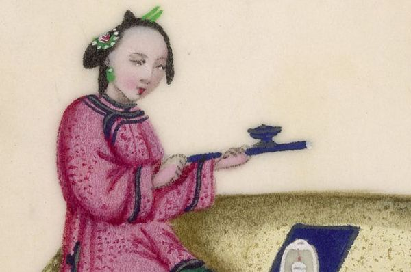
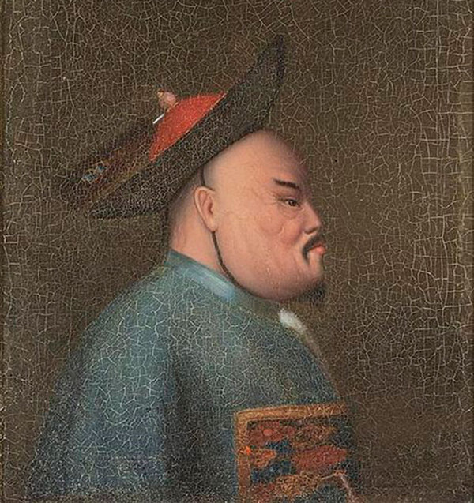
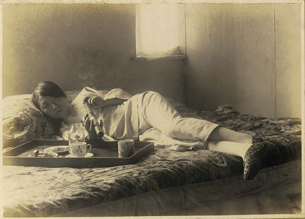
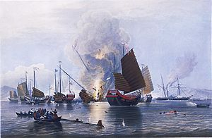

Китайская цивилизация — одна из древнейших в мире. Иногда историки в шутку говорят, что у любого знакового открытия, совершённого в любой из стран мира, существует китайский аналог. Только в Китае открытие случилось на несколько веков раньше.
Особое место в истории Китая занимают так называемые Опиумные войны. Это был конфликт совершенно нового типа, где борьба шла не за захват территорий, а за контроль над ресурсами и рынками сбыта.
В первой половине XIX века Китай, где правила династия Цин (Манчжурская династия), вёл выгодную торговлю со странами Европы. Европейцам очень полюбились китайские товары, которые вошли в жизнь разных слоёв населения: чай, фарфор, шелка, веера, всевозможные экзотические безделушки и даже декоративные собачки. Европу охватила мода на Восток вообще и Китай в частности.

Курение опиума. Картина XIX века
Однако Великобритания, ведущая морская и торговая держава того времени, была не в восторге от сложившегося положения вещей. Всё дело было в политике династии Цин, которая, получая выгоды от торговли с Европой, продолжала ограждать китайцев от иностранного влияния.
Для европейцев в Китае был открыт лишь один порт, торговля с ними была разрешена лишь гильдии 12 торговцев. Продавать свои товары в Китае европейцам не разрешалось. Пробиться на этот рынок смогли лишь торговцы итальянским стеклом и русским мехом.
Переговоры не давали никакого эффекта. Китайский император Цяньлун писал английскому королю Георгу III: «У нас есть всё, что можно пожелать, и нам не нужны товары варваров».
Взаимопониманию не способствовали и, так сказать, идеологические взгляды представителей династии Цин. Они объявили себя властелинами мира, считая, что все другие государства должны платить им дань. Воинственная риторика не подпитывалась агрессивными действиями: Китай просто не стремился к развитию внешнеполитических связей, предпочитая жить в ощущении «мирового господства». Когда же дело доходило до переписки с иностранными главами государств, письма китайских императоров заканчивались фразой: «Трепеща, повинуйтесь и не выказывайте небрежения».
Англичане, не привыкшие кому-либо уступать, решили подчинить Китай при помощи... наркотических средств. В индийской провинции Бенгалия выращивали опиумный мак и употребляли наркотические вещества в ритуальных целях. Британцы, контролировавшие Индию, решили, что могут одновременно и увеличить финансовые поступления своей колонии, и добиться прогресса в Китае.
Британская Ост-Индская компания приобретает монополию на закупку бенгальского опиума ещё в 1773 году. В 1775 году эмиссары компании начинают нелегальную продажу опиума в Китае.
Запрет, как это часто бывает, не помог. Британская Ост- Индская компания, реализовавшая в 1775 году всего 1,5 тонны опиума, к 1830 году довела годовые продажи до 1500 тонн. Этот наркотрафик действовал с полного одобрения английского правительства, которое к 1833 году получило то, что хотело: положительный торговый баланс с Китаем, достигнутый исключительно при помощи наркотиков.
Дело было настолько прибыльным, что в 1834 году британские предприниматели добились отмены монополии Ост-Индской компании, и в Китай хлынул новый поток опиума.
Император Китая, мнивший себя властелином мира, спохватился слишком поздно. Проведённое изучение положения дел показало ошеломляющие результаты: в потребление опиума были вовлечены миллионы китайцев всех сословий, включая военных, чиновников, представителей аристократии. Поставки дурмана шли через коррумпированных госслужащих. Тех, кто пытался воспрепятствовать происходящему, просто устраняли.
Наркоманами стали от 10 до 20% столичных и от 20 до 30% провинциальных чиновников, в отдельных учреждениях этим занимались от 50 до 60% всех должностных лиц. Среди солдат и офицеров курение опиума стало повальным явлением. Китайская нация уверенно шла к полной деградации.

Линь Цзэсюй
В 1839 году император назначает на пост чрезвычайного представителя по борьбе с контрабандой опиума Линь Цзэсюя.
Прибыв в Гуанчжоу, чиновник начинает действовать смело и решительно. Английские и американские торговцы, находившиеся в единственном открытом для иностранцев порту, сосредоточили у себя большие запасы наркотиков. Линь Цзэсюй приказал их сдать, а получив отказ, блокировал склады войсками. В итоге было изъято более 19 тысяч ящиков и 2 тысячи тюков опиума.
Линь Цзэсюй действовал не только запретительными мерами. Иностранцам было предложено право продолжить торговлю с Китаем, но при даче письменного обещания навсегда прекратить торговлю опиумом. Чиновник был готов компенсировать потерянный опиум тем, кто пойдёт на сделку, предоставив взамен дорогостоящие китайские товары.
Но дело зашло слишком далеко. В наркотрафик были вовлечены даже приближенные к императору лица, которые настоятельно советовали монарху «прекратить кошмарить бизнес». С другой стороны, сторонники силовой линии предлагали изгнать европейцев из Китая полностью
Линь Цзэсюй видел, что полная изоляция лишь даст Британии повод для военного вмешательства, которого она откровенно искала. Но повлиять на императора он не мог.
В декабре 1839 года император Китая объявил о полном закрытии страны для иностранных торговцев.

Курение опиума. Конец XIX века. Фотография
В апреле 1840 года Британская империя объявила Китаю войну. В том же месяце флотилия из 40 кораблей с 4000 солдат на борту отправилась из Индии в направлении Китая. Английские притязания поддержали Соединённые Штаты.
Общая численность армии Китая составляла 880 000 человек. Силы эти, однако, были разрозненными, не имели опыта боевых действий в течение нескольких десятилетий. В довершение всего, как уже говорилось, на опиум «подсели» и китайские военные. Накануне столкновения английские торговцы срочно отправляли новые партии наркотика в районы базирования китайских армейских частей. Отдавали опиум едва ли не даром: победа в войне обещала всё окупить.

Обстрел китайских джонок
Хорошо подготовленная и прекрасно вооружённая английская армия с лёгкостью разгромила китайские подразделения. Попытка оказать хоть сколько-нибудь успешное сопротивление провалилась. В августе 1840 года английские войска появились у стен Пекина, и император предложил англичанам переговоры.
По приказу императора была возобновлена торговля с англичанами, прекращена борьба с опиумом, со своих постов был снят Линь Цзэсюй, позже отправленный в ссылку.
В то же время монарх пытался затягивать переговоры и отказываться от ранее данных обещаний. Всё это привело к возобновлению войны, которая продолжалась столь же успешно для Англии.
В течение 1841-1842 годов английские экспедиционные корпуса действовали в ряде китайских провинций, захватывая город за городом. В начале августа 1842 года британцы подошли к Нанкину, южной столице Китая, и вынудили императора принять все их условия.
29 августа 1842 года был подписан Нанкинский договор, согласно которому Китай должен был выплатить контрибуцию в размере 21 миллиона долларов серебром: гигантская по тем временам сумма. 6 миллионов долларов Китай должен был выплатить за уничтоженный опиум. Для иностранных торговцев открывались 5 портов страны, сами иностранцы и работающие на них китайцы выводились из-под действия законов Китая. Также Китай передавал в руки Англии Гонконг.
Кабальные условия новых соглашений заставили Китай возобновить войну. Сопротивление иностранным экспедиционным корпусам оказывалось более ожесточённое, перелома в войне тем не менее не наступило.
В 1860 году англо-французские войска встретились в Гонконге, высадились в Бэйтане 12 августа и успешно атаковали крепости Дагу 21 августа. В октябре они подступили к Пекину, разрушив и разграбив летний императорский дворец.
Под угрозой разрушения стен самого Пекина при помощи артиллерии власти Китая согласились на новые переговоры.
Российский представитель Николай Игнатьев лавировал между сторонами конфликта, добиваясь урегулирования территориальных споров с Китаем.
Генерал-адъютант Н. П. Игнатьев. Пекин, 1900 г.
Когда союзные войска оказались у стен Китая, Игнатьев добился роли посредника, организовав переговоры в Русской миссии. Для китайцев русский посланник добился отказа союзников от планов по оккупации Пекина.
За это правительство Китая согласилось подписать и ратифицировать в ноябре 1860 года Пекинский трактат. За Россией был утверждён левый берег Амура и Уссури со всеми приморскими гаванями до бухты Посьета и манчжурским берегом до Кореи. На западе была значительно исправлена в пользу России граница по озеру Нор-Зайсанг в Небесных горах. Россия получила право сухопутной торговли в китайских владениях, а также право на открытие консульств в Урге, Монголии и Кашгаре.
Договор с западными державами был заключён раньше. Империя Цин должна была выплатить новую многомиллионную контрибуцию, открыть для иностранной торговли Тяньцзинь, разрешить использовать китайцев в качестве рабочей силы в колониях Великобритании и Франции.
Вдобавок к Гонконгу Великобритания получила южную часть Цзюлунского полуострова.
Торговля опиумом, осуществлявшаяся иностранцами, стала легальной.
Через некоторое время, однако, иностранцы, добившиеся «открытия Китая», стали осознавать, что «ключ» создал слишком много проблем. «Препятствием является вовсе не отсутствие спроса в Китае на английские товары... Плата за опиум поглощает всё серебро, к большому ущербу для общей торговли китайцев... У фабрикантов нет перспектив торговли с Китаем», — писали английские газеты.
Опиум вверг Китай в растянувшийся на десятилетия кризис, который казался необратимым. К середине XX века плантации опиумного мака, который стали возделывать в самом Китае, занимали до миллиона гектаров, а количество потребителей зелья измерялось десятками миллионов. Остановить вакханалию оказалось возможным лишь после прихода к власти коммунистов во главе с Мао Цзэдуном.